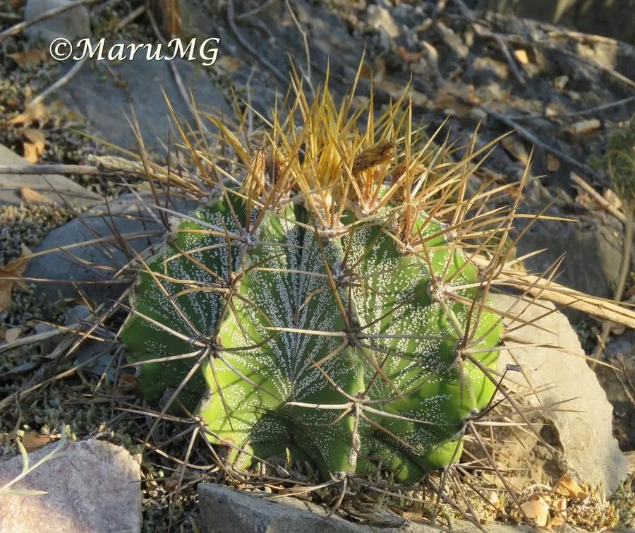

多肉植物 · 植物界
般若 Astrophytum ornatum

仙人掌科星球属多年生肉质植物，球体棱脊高耸、覆白色星点，花黄色，是星球属中体型最大、棱最挺拔的种类。
- 分类
- 门被子植物门纲木兰纲目石竹目科仙人掌科属星球属
- 栖息环境
- 原产墨西哥中部石灰岩山地，喜光耐旱、通风良好
- 地理分布
- 原产墨西哥中部；中国各地作为观赏仙人球栽培
- 保护级别
- 暂无评估；栽培观赏植物，不涉及保护等级
物种志
般若为仙人掌科星球属多年生肉质植物，幼时球形，老时圆柱状，高可达一米，直径约十五厘米。棱五至十条，棱脊高耸，表面密布白色星点状毛簇，刺座排列于棱脊，刺黄褐色至灰褐色。花生于球体顶部，花冠漏斗状，黄色，花期夏季；浆果椭圆形，成熟时灰绿色，种子黑色。
般若原产墨西哥中部，中国各地作为观赏仙人球栽培。它喜光、耐旱，生长较慢，夏季高温时需适度遮阴；适宜疏松透气、排水良好的颗粒基质，忌积水和闷热。球体挺拔、棱脊分明、白点如星，是星球属中最具雕塑感的种类；成年植株可高达一米，十分壮观。繁殖以播种为主，也可嫁接。
形态与习性
- 株型幼球状，老时柱状
- 球径直径约 15 cm，高可达 1 m
- 花期夏季，花黄色
- 光照喜光，夏季适度遮阴
- 水分耐旱，干透浇透
- 土壤疏松排水良好的颗粒土
- 主要用途仙人球盆栽、标本栽培
趣味知识
- 般若的棱脊高耸、表面布满白色星点，像一件天然的雕塑作品。
- 它是星球属中体型最大的种类，老株可长到一米高。
- 般若生长缓慢，一根独球长成柱状往往需要十几年时间。